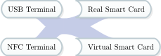

Welcome to the Virtual Smart Card Architecture documentation!¶
Welcome to the Virtual Smart Card Architecture. Virtual Smart Card Architecture is an umbrella project for various projects concerned with the emulation of different types of smart card readers or smart cards themselves.

The Virtual Smart Card Architecture connects different aspects of smart card handling
Currently the following projects are part of Virtual Smart Card Architecture:
Looking for a feature the included programs do not offer? Want to extend the functionality of some library? Apart from requesting a new feature, you can have a look at these programming guides and try yourself:


Download¶
You can download the latest release of the Virtual Smart Card Architecture here. Older releases are still available at the old project location.
Alternatively, you can clone our git repository:
git clone https://github.com/frankmorgner/vsmartcard.git
References¶
- Mor12
Frank Morgner. Mobiler chipkartenleser für den neuen personalausweis: sicherheitsanalyse und erweiterung des "systems npa". Master's thesis, Humboldt-Universität zu Berlin, 2012. URL: https://sar.informatik.hu-berlin.de/research/publications/SAR-PR-2012-05/SAR-PR-2012-05_.pdf.
- MO10
Frank Morgner and Dominik Oepen. "die gesamte technik ist sicher". besitz und wissen: relay-angriffe auf den neuen personalausweis. In 27th Chaos Communication Congress, 26–31. Chaos Computer Club, 12 2010. URL: http://media.ccc.de/browse/congress/2010/27c3-4297-de-die_gesamte_technik_ist_sicher.html.
- MOMR12
Frank Morgner, Dominik Oepen, Wolf Müller, and Jens-Peter Redlich. Mobile smart card reader using nfc-enabled smartphones. In Andreas. Schmidt, Giovanni Russello, Ioannis Krontiris, and Shiguo Lian, editors, Security and Privacy in Mobile Information and Communication Systems, volume 107 of Lecture Notes of the Institute for Computer Sciences, Social Informatics and Telecommunications Engineering, 24–37. Springer Berlin Heidelberg, 2012. URL: http://sar.informatik.hu-berlin.de/research/publications/SAR-PR-2012-07/SAR-PR-2012-07_.pdf, doi:10.1007/978-3-642-33392-7_3.
- MMO11
Wolf Müller, Frank Morgner, and Dominik Oepen. Mobiles szenario für den neuen personalausweis. In Ulrich Waldmann, editor, Tagungsband zum 21. SIT-SmartCard Workshop, 179–188. Stuttgart, 2011. Fraunhofer-Institut für sichere Informationstechnologie, Fraunhofer Verlag. URL: http://sar.informatik.hu-berlin.de/research/publications/SAR-PR-2011-01/SAR-PR-2011-01.pdf.
- Oep10
Dominik Oepen. Authentisierung im mobilen web: zur usability eid-basierter authentisierung auf einem nfc handy. Master's thesis, Humboldt-Universität zu Berlin, Berlin, 2010. URL: http://sar.informatik.hu-berlin.de/research/publications/#SAR-PR-2010-11.
- OM11
Dominik Oepen and Frank Morgner. Foss im umfeld des neuen personalausweis. LinuxTag 2011, 2011.